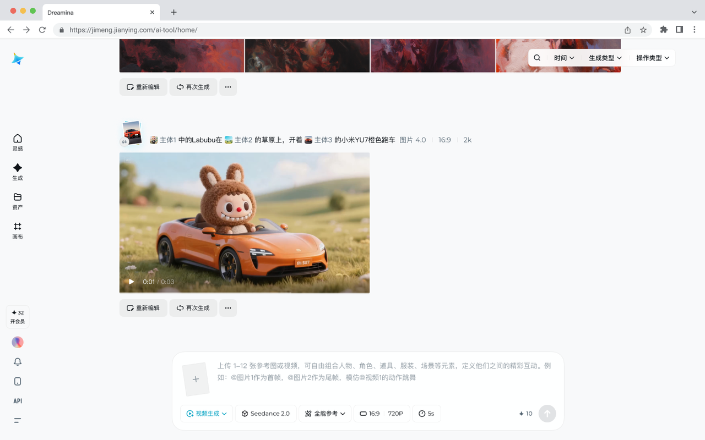
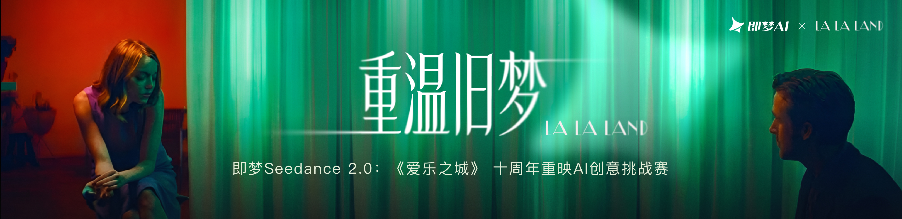

奶茶五岁生日短片，我用 Seedance 2.0 半小时搞定了
上班族给宠物做生日短视频的真实经历，从 deadline 焦虑到用 AI 视频生成救急——附踩坑和调参经验
奶茶五岁生日那天，我离 deadline 只剩不到四小时。
说起来有点不好意思——我是那种平时把猫的照片视频拍了几百条、真要剪一条发朋友圈的短片却能卡壳一整晚的人。剪映里堆着奶茶在沙发上打滚、跳上窗台晒太阳、偷吃零食被我抓包的片段，素材多得挑花眼，但就是找不到一个能打动人的开场。空镜太长，镜头切换生硬，配乐要么太吵要么太闷，调了三个小时还是不满意。
第二天还要早起赶项目，闹钟设的六点半。我盯着剪映界面的时间轴，有种想把手机扔了的冲动。
同事阿凯路过工位，探头进来："今晚不走？"我把鼠标往桌上一放："给猫做生日视频，卡壳了。"他笑了笑，从口袋掏出手机滑了两下，一条短视频递到我面前——一只橘猫站在窗台上，镜头缓慢环绕，配着轻柔的钢琴声，画面里有细雨飘进来。"试试即梦，它的seedance2.0官网上有个 Seedance 2.0 模型，春晚都在用这个做舞台效果。"
我第一反应是他在扯。AI 视频不是只能做几秒的特效吗？那种一看就假的动漫风？
阿凯没废话，点开即梦 APP 给我演示。界面比我想象的简洁太多——一个大输入框，旁边有个"@"按钮可以选参考素材。他点了"@"，从相册里选了三张自己家猫的照片，然后在输入框里打了大概二十行字，每一行后面都标着【0-2秒】【2-4秒】这样的时间戳。"这是多镜头提示词，模型能按你写的镜头节奏出片。"
十分钟后，一条 15 秒的短视频出来了。橘猫从窗台上跳下来的动作连贯得像真拍的，阳光打在毛上的质感也对。我揉了揉眼睛，确认这不是他拍的再告诉我是 AI 做的。
下班铃响的时候，我已经把应用商店的即梦装好了——或者你也可以直接去官方下载页拿安装包。
第一次上手：素材 + 时间轴，就这么简单
即梦 APP 下载完，用手机号登录，首页最显眼的位置就是 Seedance 2.0 的入口。我先把手机里存的奶茶的三张照片导进去——正脸特写、侧脸、趴着睡觉的全景。每张照片都有我自己拍的那天的天气信息（那天下着小雨），选的时候特意挑了不同角度的。
然后就是写提示词。阿凯说的"时间轴分段法"我在官方文档里看到过教程，说的就是把 15 秒切成段落，每段一句镜头描述，声音跟画面同步编排。我依葫芦画瓢，把奶茶的生日短片拆成四个镜头：
0-3 秒：首帧用奶茶正脸照片，特写它睁着大眼睛看镜头，画面渐亮，背景有淅沥的雨声。
3-6 秒：快速切镜，奶茶跳上窗台，动作轻快，爪爪抓住窗框的瞬间定格半秒。
6-10 秒：第一视角从窗台往下看，奶茶趴在那里舔毛，阳光从侧面斜进来。
10-15 秒：镜头推近至特写，奶茶闭上眼打了个哈欠，尾帧定格在睡觉的那张照片，画面渐暗。
提示词里特意加了"保持奶茶毛色为浅棕色、眼睛为蓝色"，怕模型认错猫。
点生成。等了大概三分钟，视频出来了。
第一版不理想，调一下就好
播放的时候我皱了眉——第一个镜头里奶茶的毛色明显偏深了，跟我上传的参考图对不上；还有第三镜头里舔毛的动作有点僵硬，像被卡了帧。
我把问题列出来：角色一致性不够（毛色不对），动作流畅度一般。后来去seedance2.0文档翻了一下才弄明白——官方给的常见问题说明里说角色长相每镜不同通常是参考素材不够，建议补 2~3 张多角度的角色图，然后在提示词里明确写"保持特征一致"。
于是我又翻相册，找出了之前带奶茶去公园的两张侧脸照，毛色和这次要做短片里的那三张完全一致的那种。五张参考素材一起上传，在提示词开头加了一句"全程保持奶茶的毛色和眼睛特征一致"。
第二次生成，毛色准了。蓝眼睛也对上了。舔毛的动作流畅度也提升了——虽然还达不到专业剪辑的流畅度，但对于一个 AI 来说已经很自然了。
还有个小问题我没当时发现：视频里想加的字幕"五岁快乐"有点糊，小字看不清。后来才知道这也是官方承认的能力边界——画面内的小字、复杂字形容易出错，官方建议要么用大字号、要么后期加字。当时我索性把字幕去掉，觉得画面本身已经够好，直接用了。

半小时搞定，我成了群里的"摄影大神"
最终版的 15 秒短片发出去的时候，离奶茶生日派对开始只剩十分钟。朋友圈下面炸了——同事说"这转场是佳能电影机拍的吧？"，闺蜜说"你这猫我怎么从来没见过这么好看的样子？"，甚至有人私信问我接不接宠物写真的活。
我在评论区回了三个字："AI 做的。"没人信。
后来才知道，Seedance 2.0 上线的时间不算长，但已经在专业圈子里用开了——2026 年春晚就拿它做了《贺花神》《驭风歌》这些节目的舞台效果，戛纳电影节还有个用它做的 AI 影片。普通用户的玩法也在跟着迭代：短剧片段、萌宠挑战、电商广告素材批量生产，应用场景比我能想到的要多得多。即梦官方还做过萌宠创意挑战赛，让用户用多模态参考把自家猫狗"演"进电影经典场景，那段时间短视频平台上刷到的好多宠物短片都是用 Seedance 2.0 做的。

踩了几个小坑，顺手记下来
不是说 AI 视频就完美——官方评测里点名了几个当前版本的能力边界：多角色同时说话的时候口型对不准，偶有音频失真，细节稳定性还有提升空间，两个以上角色同时保持形象有难度，画面内小字容易糊。这些问题不是提示词写得好就能根治的，是模型本身的短板，得学会绕开。
具体到我这次的踩坑经验：
- 角色一致性：准备足够多的多角度参考图，不要只给一张正脸照。
- 动作流畅度：描述里别写太复杂的动作，或者拆成两段生成再拼接。
- 画面内文字：要么后期加，要么用大字号，别指望 AI 生成的小字能看清楚。
当然还有更多功能我这次没用到——分镜图参考法（你画一张分镜脚本图给模型，它按图来编排镜头）、全能参考（同时给角色、场景、道具多张图）、真人校验后的数字分身（自己出镜生成分身，之后让分身在视频里出镜表演，形象和声音都来自本人），这些都是参数说明里详细写了但我还没来得及试的。
对了，即梦 APP 上 Seedance 2.0 是可以直接用的，不需要额外配置什么，但电脑端和网页端的权限跟手机端不完全一样，有些功能（比如数字分身的真人校验流程）只在手机 APP 里开放。用电脑还是用手机端，看你自己的使用习惯吧。
奶茶现在趴在我脚边打瞌睡，生日派对的蛋糕纸还躺在茶几上。这条 15 秒的短片存进了我的云端相册，我打算等下次它过生日的时候，再用 Seedance 2.0 拍一条。
现在好了，我先去研究下怎么让 AI 生成的视频里有配音吧。对了，整理 Seedance 2.0 完整中文使用方法的那份资料，我同步到了GitHub，国内访问不方便的朋友可以去Gitee或GitCode上拿。